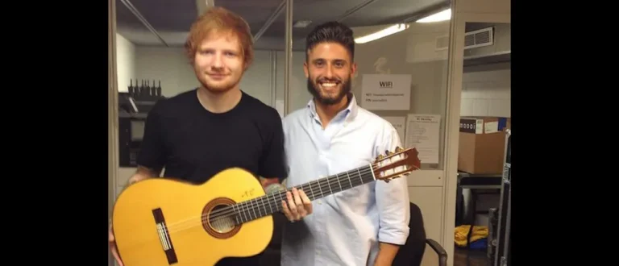

Home/ News
What is said
around oneguitar.
Premieres, awards, press articles and all the stories that explain why a Mariano Conde guitar is different.
05 / 08
Featured
The present
of the house.

115 years of a saga of guitar makers from Madrid
ExpoFlamenco →
The emotion of a guitar with soul: Samuel del Río Carmona, first winner of the “Mariano Conde” award at the International Cante de las Minas Festival
Workshop Mariano Conde →
About 60 guitars a year and wood dried for up to 30 years
The World →
The secret of the “Madrid” guitar by Ed Sheeran
ABC →
Four generations of luthiers
The Confidential →Archive · 58 articles
Stories about
the job.
Woods, varnishes, bracing, sustain, maintenance and everything behind a handmade guitar, published by the workshop.
WORLD PREMIERE! Mariano Conde «The guitar players who fell in love with the maestro Paco de Lucía»
Workshop Mariano Conde↗115 years of a saga of guitar makers from Madrid
ExpoFlamenco↗Reasons why a guitar goes out of tune
Workshop Mariano Conde↗How many strings does a Spanish guitar have?
Workshop Mariano Conde↗What is a dry sound and why is it sought in flamenco?
Workshop Mariano Conde↗Why some guitars “open up” over time
Workshop Mariano Conde↗How to choose the perfect varnish for your classical or flamenco guitar
Workshop Mariano Conde↗Guitar bracing: the hidden soul that gives life to classical and flamenco
Workshop Mariano Conde↗What makes a guitar “flamenco”?
Workshop Mariano Conde↗What makes a guitar “concert classic”?
Workshop Mariano Conde↗What is the price of a handmade guitar?
Workshop Mariano Conde↗The rosette of handmade guitars
Workshop Mariano Conde↗Who invented the guitar: history and our legacy
Workshop Mariano Conde↗Sustain on classical and flamenco guitars explained
Workshop Mariano Conde↗The mouth of the guitar: the portal of the voice
Workshop Mariano Conde↗The saddle or bridge bone: the silent heart of the guitar soul
Workshop Mariano Conde↗The nut on the flamenco guitar
Workshop Mariano Conde↗The bridge in the flamenco guitar: heart of the sound
Workshop Mariano Conde↗The emotion of a guitar with soul: Samuel del Río Carmona, first winner of the “Mariano Conde” award at the International Cante de las Minas Festival
Workshop Mariano Conde↗The head or headstock of the guitar: essence and function at the top of the neck
Workshop Mariano Conde↗The Headstock of flamenco and classical guitars: tradition, function and essence of the instrument
Workshop Mariano Conde↗Frets: the metallic essence that defines the fretboard of the classical and flamenco guitar
Workshop Mariano Conde↗Diapason: The key stage of expression in stringed instruments
Workshop Mariano Conde↗The handle in the flamenco guitar: the bridge between the body and the headstock
Workshop Mariano Conde↗The neck of flamenco guitars: heart and spine of the instrument
Workshop Mariano Conde↗Flamenco guitar background: the invisible art that gives life to the sound
Workshop Mariano Conde↗The flamenco guitar hoops: tradition, materials and sound
Workshop Mariano Conde↗The soundboard: the vibrant soul of the guitar
Workshop Mariano Conde↗The soundboard (body) of guitars: the sonic heart of the instrument
Workshop Mariano Conde↗The headstock and pegs on the flamenco and classical guitar
Workshop Mariano Conde↗Differences between flamenco and classical guitar
Workshop Mariano Conde↗What are the best strings for a flamenco guitar?
Workshop Mariano Conde↗Cutaway on a guitar: What is it and what does it imply?
Workshop Mariano Conde↗Brazilian Palo Santo wood for classical and flamenco guitars: What you should know
Workshop Mariano Conde↗Handmade guitars: tradition, art and excellence in Mariano Conde
Workshop Mariano Conde↗Madagascar Rosewood wood for classical and flamenco guitars: what you should know.
Workshop Mariano Conde↗Indian Rosewood wood for classical and flamenco guitars
Workshop Mariano Conde↗Koa wood for classical and flamenco guitars
Workshop Mariano Conde↗Maple wood for classical and flamenco guitar. What you should know.
Workshop Mariano Conde↗Ebony wood for classical and flamenco guitars
Workshop Mariano Conde↗Canadian red cedar wood for classical and flamenco guitar
Workshop Mariano Conde↗Mahogany wood for classical and flamenco guitar. What you should know
Workshop Mariano Conde↗Spruce wood for classical and flamenco guitar. What you should know
Workshop Mariano Conde↗What are the parts or pieces of a classical guitar?
Workshop Mariano Conde↗Maintenance of a guitar Mariano Conde
Workshop Mariano Conde↗What is the best wood for guitar?
Workshop Mariano Conde↗Guitar manufacturing process Mariano Conde
Workshop Mariano Conde↗Mariano’s Conde video reaction to the fallacies of “flamenco solera”
Workshop Mariano Conde↗Preview of the documentary about Mariano Conde
Workshop Mariano Conde↗Ed sheeran & Mariano Conde, ABC newspaper
Workshop Mariano Conde↗Leonard Cohen & Mariano Conde
Workshop Mariano Conde↗First Video of the Street Workshop Amnistía, 1
Workshop Mariano Conde↗Interview with Mariano Conde by Iñigo Cifuentes
Workshop Mariano Conde↗Mariano Conde in El Confidencial
Workshop Mariano Conde↗Amos Lora, a young and virtuoso guitarist in Telemadrid
Workshop Mariano Conde↗About 60 guitars a year and wood dried for up to 30 years
The World↗The secret of the “Madrid” guitar by Ed Sheeran
ABC↗Four generations of luthiers
The Confidential↗Press and recognitions
outside the
workshop.
Concerts, awards and recognitions for a way of understanding the Spanish guitar.
Teatro Isabel la Católica
Concert and meeting within the framework of the Granada Flamenco Film Festival.
Prince of Asturias Award for Letters and Arts
Recognition of the Spanish guitar and its performers.
Madrid
Presence of the house's guitars in the festival programming.
Joaquín @culturas_indomitas, Gregorio Moya, José Viñas and Encarni
Reports and interviews about the guitar trade of Mariano Conde.